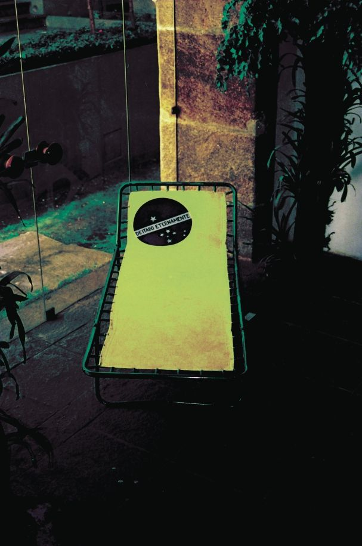

— · Instalação
FIKE
Fonte: Instalações Barja



A morte de Lygia: O que fazer sozinho e anônimo em um velório de outro anônimo que depois se descobre ser Lygia Clark?
Textos que falam desta obra
A morte de Lygia: O que fazer sozinho e anônimo em um velório de outro anônimo que depois se descobre ser Lygia Clark? ...Uma proposta poética que dê conta do inusitado do fato (que é real). Uma outra lápide talvez. Um FIKE que desfia os fios da proposta da modernidade levada ao extremo (seu fim). As fitas amarelas, azuis e vermelhas, justa homenagem a quem desafiou esses extremos e eliminou fronteiras entre arte e as (outras) coisas do mundo (com seus muitos outros fios desfiados em várias obras). Que deixar para o mundo, Mondrian? Fitas amarelas, azuis e vermelhas que comparecem recorrentemente como metáfora de um pensamento sobre (de) pintura como em De onde vem a escuridão ou em “ Pega Manet ”[4]. No primeiro trabalho, elas são elos entre as partes que não conversam necessariamente entre si, são o sustentácu
Livro Instalações Barja — pág. 9para formar séries e contextos intelectuais”. (...) O conceito é uma fórmula, pura e simples; sua ornamentação (uma expansão devida aos materiais adicionais) transforma a fórmula em imagem uma forma acabada. Exatamente assim, embora em sentido contrário, como um processo de pensamento primitivo o pensamento imagístico, deslocado até um ponto definido, acaba-se transformando em raciocínio conceitual. Eisenstein, Serguei, "O princípio cinematográfico e o ideograma", In, Campos, Haroldo de, Ideograma lógica, poesia e linguagem, p. 149-166. deitado eternamente H O monet márcia X c/ m.duchamp DA fike são joão beuys expressosionista
Livro Instalações Barja — pág. 11Ver todos os trechos (7)
Longe de considerar que a poética de Wagner Barja esteja fora da poesia visual, se deve inscrever nas suas coordenadas de olhar expandido grande parte de seus trabalhos. Sobretudo aqueles nos quais a nomenclatura faz parte da obra, o seu nomear está em função determinante, num triângulo de potências verbais, conceituais e visuais. São vários os trabalhos então, que passam a funcionar com o elemento verbo-visual ativado, gerando um campo plural de forças estéticas, onde até o território da sensorialidade é produzido por contigüidade conceitual e reflexiva. Assim o conjunto de Da², H2O Monet, Fike e até Natureza X Cultura = Barbárie se aproxima. Neles, a conversa submersa que se estabelece e visa certa infinitude, numa escrita (“esse jogo insensato de escrever”, como diria Blanchot), que aqui aposta também numa simultaneidade de linguagem. A própria idéia de “Obranome”, (motivo de curadoria e obra), está nessa freqüência não reducionista. Barja veicula uma corrente de pensamento que não quer repousar na anestesia retiniana, nesse sentido, não deixa de ser um sintoma, que o artista tenha orientado-se para alguns trabalhos sobre a cegueira, como para uma investigação da transparência,
Livro Instalações Barja — pág. 33FIKE -1986
Livro Instalações Barja — pág. 45the prophet and the ocelot nature x culture = barbarism o casamento de Márcia X com Marcel Ducham The death of Lygia: What would you do alone and anonymous at the wake of another anonymous person whom you later discovered to be Lygia Clark?… A poetic proposal that recognizes the unusualness of the fact (which is real). Maybe another tombstone. A FIKE that challenges the fiber of the modernist proposal taken to its extreme (its end). The red, blue, and yellow ribbons offer fitting homage to one who challenged these extremes and eliminated the barriers between art and (other) things of this world (with its many other fibers challenged in various works). What to leave the world, Mondrian? Red, yellow and blue ribbons make recurrent appearances as a metaphor for a thought about (of) painting, as in From Whence the Darkness or Pick Manet and Pick Monet. . In the first work, they are links between parts that do not necessarily converse amongst
Livro Instalações Barja — pág. 89the marriage of Márcia X and Marcel Duchamp Prophet and the Ocelot - 1986 DA2 Mognus Dei -1999 laid out eternally… H O monet Mme X / m.duchamp DA fike saint john beuys zionistexpress Notes: 1 - These works were exhibited in Brasilia, at the Conjunto Cultural da Caixa; in Buenos Aires, at the Centro de Arte Moderno de Quilmes; and in Madrid, at the Centro Cultural El Cruce; each time, a conversation was established with the local community (in Madrid, for example, blind lottery-ticket vendors from the streets were engaged in participating). 2 - The original 80’s version of TurbulenceExperience was developed in partnership with Márcia X and Alex Hamburger in Rio de Janeiro. The second version, exhibited in Brasilia in 2002, was a reworking an
Livro Instalações Barja — pág. 91in Wagner Barja's work to fall outside the realm of visual poetry, we should see that the majority of his works fit right into the expanded visual coordinates of that medium. This is especially true when the nomenclature forms part of the work, and the naming has a determinant function in a triangle of verbal, conceptual and visual powers. Many of these works, in fact, are based on the activation of this verbal-visual element which generates a multiple aesthetic force field where even the sensorial territory is produced by conceptual and reflexive contiguity. The installations Da², H2OMonet, Fike and even Natureza versus Cultura = Barbárie stand as examples. Present in each is the submerged conversation that establishes itself and reaches for a certain infinitude, in written words (“this insane game of writing”, as Blanchot would say) that, here, also compete for a simultaneity of languages. The very idea of “Obranome”, (curatorial and work motif) operates on this non-reductionist frequency. The current of thought Barja transmits is unwilling to loll in retinal anesthesia. It is, in a way, a symptom, one which the artist has channeled into certain works whose shared theme is blindn
Livro Instalações Barja — pág. 112